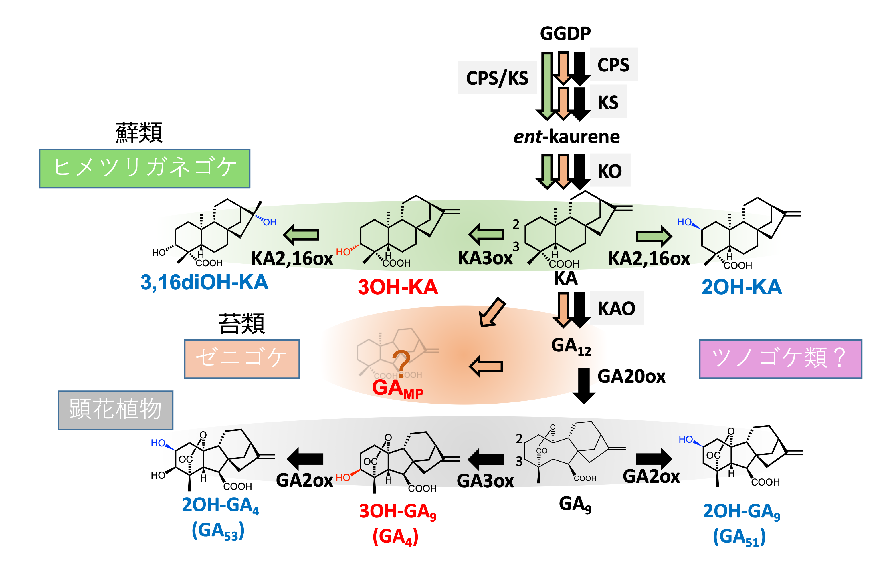
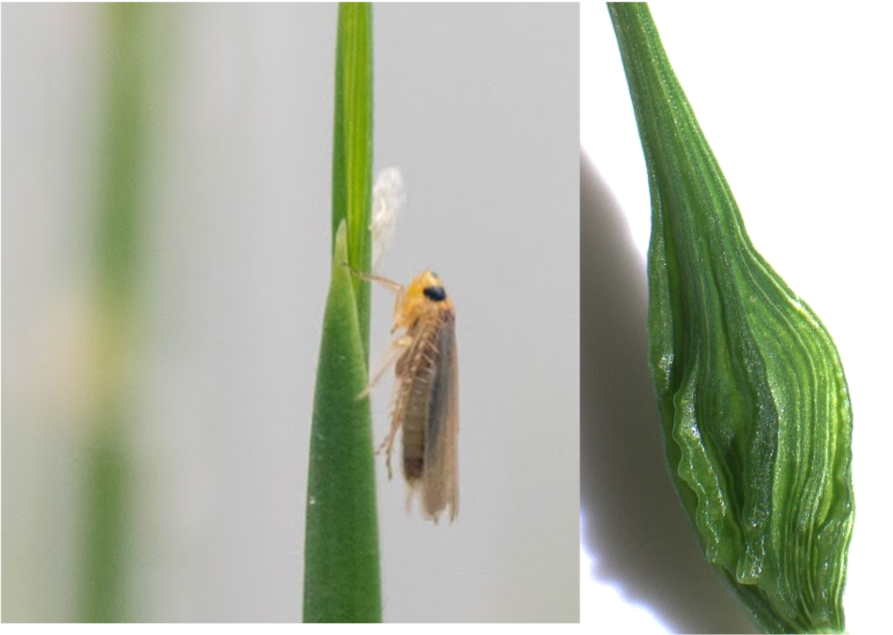
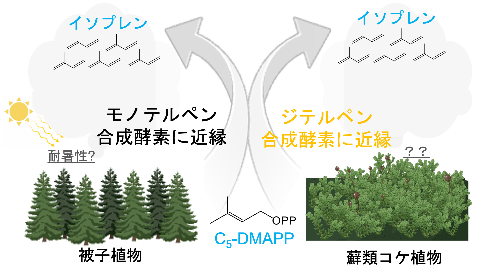
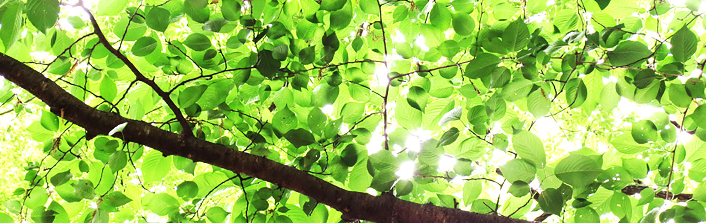

研究についてInformation
植物ホルモン起源物質の普遍性と特異性の解明Biosynthesis and Metabolism of Ancestral Plant Hormone

現代の植物がどのように成長制御能力を獲得したのでしょうか？植物に普遍的に存在する成長制御物質として植物ホルモンを学んだ人が多いかと思います。しかし興味深いことにある種のコケ植物はジベレリン(GA)という植物ホルモンをつくらず，その生産過程からGAの起源物質(3OH-KAやGAMP)を作っていることが判明しました。GA起源物質の特異性や普遍性を研究することで，GAはどこから来たのか進化的な視点でも研究を進めます。また，コケが持つ独自の成長制御の仕組みを理解することで，新しい植物成長調節剤の開発や，環境ストレスに強い作物の開発などにつなげています。
植物の成長制御機構を撹乱する昆虫由来天然物の同定 Isolation of Insect-Derived Natural Substances

ある種の昆虫が植物の栄養分を吸っている時に植物に入れている物質によって，植物の伸長成長が抑制され，葉脈に隆起(虫えい)ができます。本来は植物にはできない異常な構造物とも言える虫えいが，昆虫のどんなモノから，どのように形成されているのかを解明するために研究をしています。我々の標的としている昆虫はイネ科の植物を餌にしながら，形態異常を引き起こします。本研究は農作物の害虫対策だけでなく，植物に秘められた器官形成能力を活かした新しい植物の形を作り出す技術開発を目指します。
植物の揮発性天然有機化合物の化学的制御剤の開発Chemical Control of Volatile Organic Compounds in Plants

道端や庭先でよく見かけるコケ植物が温暖化を促進してしまう揮発性物質(イソプレン)を多く放出していることが分かっていました。最近私たちは，コケ植物は樹木とは異なる酵素でイソプレンを作ることを明らかとしました。しかし，コケ植物がどうしてイソプレンを放出するのかその理由は分かっていません。その理由を解明するだけでなく，放出の抑制を志向した化学制御剤の開発も進めています。
新しい植物内在性の天然有機化合物の探索Isolation of Novel Endogenous Natural Substances in Plants

植物ホルモン，抗生物質，多くの天然有機化合物が日本人により発見されています。コケとイネで機能している新しい植物成長制御物質の探索研究を進めています。化石植物を用いた研究も展開しています。